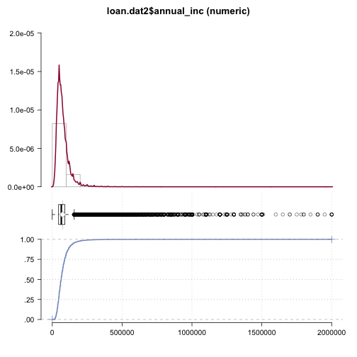
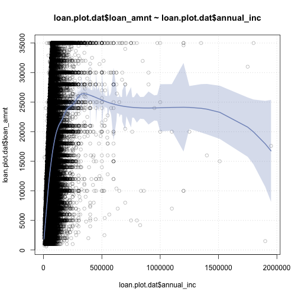

xwMOOC 기계학습
신용평점모형 탐색적 데이터 분석, 전처리
학습목표
- 탐색적 데이터 분석 중 결측값 처리 등 데이터 전처리를 살펴본다.
- 결측값 처리 전략에 대해 살펴본다.
- 데이터 전처리 및 피쳐 엔지니어링(Feature Engineering)을 이해한다.
1. 채무 불이행 변수 설정
read_csv 함수를 통해 데이터를 불러온 다음, 가장 중요할 수 있는 종속변수를 설정한다. loan_status는 다양한 상태정보를 담고 있어, 로지스틱 회귀, SVM, 확률숲(Random Forest), 의사결정나무 등 다양한 모형에 입력변수로 넣을 수 있도록 적절히 인코딩 부호화한다.
##=====================================================================
## 07. 채무 불이행 예측
##=====================================================================
# 종속변수 탐색
bad_indicators <- c("Charged Off",
"Default",
"Does not meet the credit policy. Status:Charged Off",
"In Grace Period",
"Default Receiver",
"Late (16-30 days)",
"Late (31-120 days)")
loan.dat$loan_status_yn <- ifelse(loan.dat$loan_status %in% bad_indicators, 1, 0)2. 채무 불이행 변수 중심 탐색적 데이터 분석
gmodels는 gmodels: Various R Programming Tools for Model Fitting는 전통적으로 많이 사용되는 SPSS, SAS, 미니탭등 오랜시간 동안 데이터분석에 친숙하고 검증된 표형식으로 된 정보를 뽑아내고 해석하는데 유용하다.
CrossTable 함수를 사용해서 prop.r = TRUE, prop.c=FALSE, prop.t=FALSE, prop.chisq=FALSE 인자값을 설정해서, 행/열/전체 비율과 카이제곱 통계량을 표에 표현할 수 있다. 물론, DescTools 팩키지의 Desc 함수를 사용해서, 단변량 및 변수 사이의 관계도 산점도, 막대그래프, 히스토그램, 분포도를 통해 확인가능하다.
# 1. 표를 통한 EDA 분석
library(gmodels)
## 단변량 표
CrossTable(loan.dat$loan_status_yn)
Cell Contents
|-------------------------|
| N |
| N / Table Total |
|-------------------------|
Total Observations in Table: 887379
| 0 | 1 |
|-----------|-----------|
| 819950 | 67429 |
| 0.924 | 0.076 |
|-----------|-----------|
## 두변수 표
CrossTable(loan.dat$grade, loan.dat$loan_status_yn, prop.r = TRUE, prop.c=FALSE, prop.t=FALSE, prop.chisq=FALSE)
Cell Contents
|-------------------------|
| N |
| N / Row Total |
|-------------------------|
Total Observations in Table: 887379
| loan.dat$loan_status_yn
loan.dat$grade | 0 | 1 | Row Total |
---------------|-----------|-----------|-----------|
A | 144539 | 3663 | 148202 |
| 0.975 | 0.025 | 0.167 |
---------------|-----------|-----------|-----------|
B | 241079 | 13456 | 254535 |
| 0.947 | 0.053 | 0.287 |
---------------|-----------|-----------|-----------|
C | 226806 | 19054 | 245860 |
| 0.923 | 0.077 | 0.277 |
---------------|-----------|-----------|-----------|
D | 123683 | 15859 | 139542 |
| 0.886 | 0.114 | 0.157 |
---------------|-----------|-----------|-----------|
E | 60960 | 9745 | 70705 |
| 0.862 | 0.138 | 0.080 |
---------------|-----------|-----------|-----------|
F | 18663 | 4383 | 23046 |
| 0.810 | 0.190 | 0.026 |
---------------|-----------|-----------|-----------|
G | 4220 | 1269 | 5489 |
| 0.769 | 0.231 | 0.006 |
---------------|-----------|-----------|-----------|
Column Total | 819950 | 67429 | 887379 |
---------------|-----------|-----------|-----------|
# 2. 그래프를 통한 EDA 분석
library(DescTools)
## 단변량: 히스토그램
Desc(loan.dat$loan_amnt, plotit=TRUE)-------------------------------------------------------------------------
loan.dat$loan_amnt (numeric)
length n NAs unique 0s mean meanSE
9e+05 9e+05 0 1e+03 0 1.48e+04 8.95e+00
.05 .10 .25 median .75 .90 .95
3.60e+03 5.00e+03 8.00e+03 1.30e+04 2.00e+04 2.80e+04 3.20e+04
range sd vcoef mad IQR skew kurt
3.45e+04 8.44e+03 5.72e-01 8.60e+03 1.20e+04 6.82e-01 -2.57e-01
lowest : 5.00e+02 (1e+01), 5.50e+02, 6.00e+02 (6e+00), 7.00e+02 (3e+00), 7.25e+02
highest: 3.49e+04 (1e+01), 3.49e+04 (9e+00), 3.50e+04 (2e+01), 3.50e+04 (3e+01), 3.50e+04 (4e+04)

index_highincome <- which(loan.dat$annual_inc > 2e+06)
loan.dat2 <- loan.dat[-index_highincome,]
# Desc(loan.dat$annual_inc, plotit=TRUE)
Desc(loan.dat2$annual_inc, plotit=TRUE)-------------------------------------------------------------------------
loan.dat2$annual_inc (numeric)
length n NAs unique 0s mean meanSE
9e+05 9e+05 4e+00 5e+04 2e+00 7.48e+04 5.35e+01
.05 .10 .25 median .75 .90 .95
2.80e+04 3.40e+04 4.50e+04 6.50e+04 9.00e+04 1.25e+05 1.50e+05
range sd vcoef mad IQR skew kurt
2.00e+06 5.04e+04 6.74e-01 3.08e+04 4.50e+04 5.89e+00 9.68e+01
lowest : 0.0 (2e+00), 1.20e+03, 1.77e+03, 1.90e+03, 2.00e+03
highest: 1.85e+06, 1.90e+06 (2e+00), 1.90e+06, 1.95e+06, 2.00e+06 (5e+00)

## 다변량: 산점도
index_sample <- sample(1:nrow(loan.dat2), 0.1*nrow(loan.dat2))
loan.plot.dat <- loan.dat2[index_sample, ]
Desc(loan.plot.dat$loan_amnt ~ loan.plot.dat$annual_inc, plotit=TRUE)-------------------------------------------------------------------------
loan.plot.dat$loan_amnt ~ loan.plot.dat$annual_inc
Summary:
n pairs: 9e+04, valid: 9e+04 (100.0%), missings: 0 (0.0%)
Pearson corr. : 4.196e-01
Spearman corr.: 5.064e-01
Kendall corr. : (sample too large)

3. 결측값
결측값(Missing Value)는 의도적이지 않고, 별다른 정보가 없어 제거되어야 하는 경우도 있지만, 경우에 따라서 결측값이 중요한 정보를 갖는 경우도 있다. 이런 경우 피쳐 공학, 적절한 전처리 과정을 거쳐 정보의 손실이 최소화되고 유의미한 정보가 신용평점모형에 반영이 되도록 조치를 취해야 된다.
크게 결측값을 제거하는 전략을 취하거나, 결측값을 채워 넣거나, 결측값을 적절한 전처리 과정을 거쳐 보존하는 절차를 취한다.
# 3. 결측값 처리
# 결측값 생성하기
summary(loan.dat$int_rate) Min. 1st Qu. Median Mean 3rd Qu. Max.
5.32 9.99 12.99 13.25 16.20 28.99
na_index <- sample(1:nrow(loan.dat), 0.1*nrow(loan.dat))
loan.dat[na_index, "int_rate"] <- NA
summary(loan.dat$int_rate) Min. 1st Qu. Median Mean 3rd Qu. Max. NA's
5.32 9.99 12.99 13.25 16.20 28.99 88737
# 전략1: 결측값 제거
int_na_index <- which(is.na(loan.dat$int_rate))
loan.dat.delrow.na <- loan.dat[-int_na_index, ]
dim(loan.dat.delrow.na)[1] 798642 75
# 전략2: 결측값 채워넣기
median_ir <- median(loan.dat$int_rate, na.rm=TRUE)
mean_ir <- mean(loan.dat$int_rate, na.rm=TRUE)
loan.dat$int_rate[int_na_index] <- median_ir
loan.dat$int_rate[int_na_index] <- mean_ir
# 전략3: 결측값 보존 -- 중요한 정보를 갖음
loan.dat$ir_cat <- rep(NA, length(loan.dat$int_rate))
loan.dat$ir_cat[which(loan.dat$int_rate <= 8)] <- "0-8"
loan.dat$ir_cat[which(loan.dat$int_rate > 8 & loan.dat$int_rate <= 11)] <- "8-11"
loan.dat$ir_cat[which(loan.dat$int_rate > 11 & loan.dat$int_rate <= 13.5)] <- "11-13.5"
loan.dat$ir_cat[which(loan.dat$int_rate > 13.5)] <- "13.5+"
loan.dat$ir_cat[which(is.na(loan.dat$int_rate))] <- "Missing"
loan.dat$ir_cat <- as.factor(loan.dat$ir_cat)
# Look at your new variable using plot()
plot(loan.dat$ir_cat)
4. 채무 불이행 종속변수와 설명변수 일별
설명변수와 채무 불이행 종속변수 관계를 살펴보기 위해서 정상과 채무 불이행을 각 설명변수와 비교하는 분포도를 통해 도식화한다.
- 설명변수 중 숫자형 변수를 추려낸다:
sapply(loan.dat, is.numeric) - 데이터프레임을 긴 형식(long format, 한 관측점마다 한 관측변수가 되도록 변환)으로 변환:
reshape혹은tidyr ggplot으로facet_wrap기능 사용
# 심화 탐색
numeric_cols <- sapply(loan.dat, is.numeric)
library(reshape2)
loanbook.lng <- melt(loan.dat[,numeric_cols], id="loan_status_yn")
library(ggplot2)
p <- ggplot(aes(x = value, group = loan_status_yn, colour = factor(loan_status_yn)),
data = loanbook.lng)
p + geom_density() + facet_wrap(~variable, scales="free")
또한 DT 팩키지를 활용하여 대용량 데이터도 채무불이행 변수(loan_status_yn == '1')에 대해 연간소득(annual_inc), 이자율(int_rate), 대출상태(loan_status)와 함께 맞물려 확인할 수 있다. DT를 웹브라우져에서 잘 보기 위해서 devtools::install_github("wch/webshot"), webshot::install_phantomjs() 을 설치한다.
# install.packages("DT")
suppressMessages(library(DT))
suppressMessages(library(dplyr))
loan.dat %>%
filter(loan_status_yn == '1') %>%
select(annual_inc, int_rate, loan_status) %>%
slice(1:1000) %>%
datatable(., options = list(pageLength = 10)) ### 5. 훈련 데이터와 테스트 데이터
### 5. 훈련 데이터와 테스트 데이터
전처리 과정과 피쳐 공학 과정을 거치게 되면, 다음 단계로 훈련 데이터와 테스트 데이터로 나눠 통계모형 개발 혹은 기계학습 모형 적합을 준비한다.
##=====================================================================
## 03. 렌딩클럽 데이터 기계학습
##=====================================================================
# 0. 훈련과 테스트 데이터셋 분리
index_train <- sample(1:nrow(loan.dat), 2/3*nrow(loan.dat))
training_set <- loan.dat[index_train, ]
test_set <- loan.dat[-index_train,]